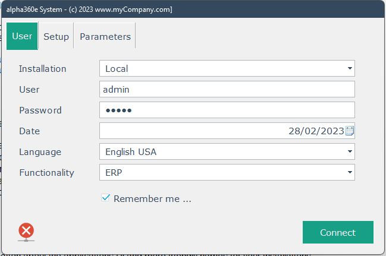
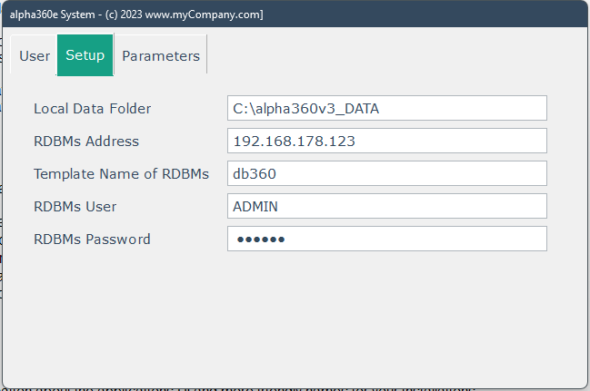
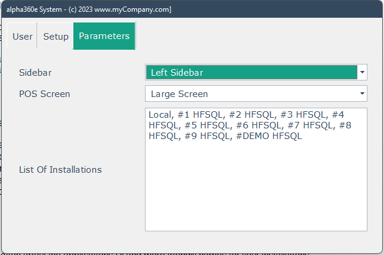
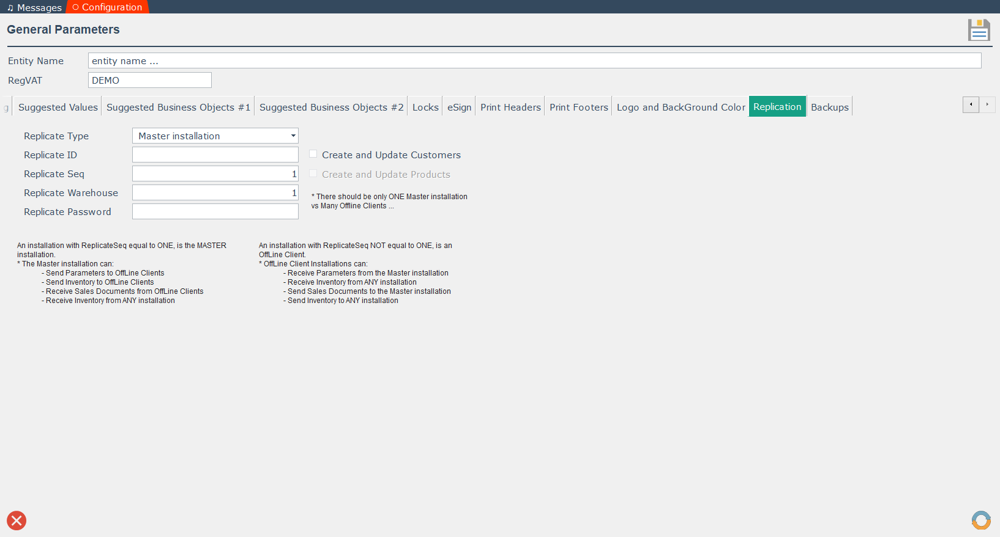

Setup
When you first "run" the Windows alpha360 ERP, you will see the following window:

Select Installation = "Local", use "User = admin" and "Password=admin", select
Functionality = "ERP" and check the Remember me check box.
The system supports, out of the box, one HFSQL Classic database and 10 HFSQL C/S databases - you can of course change the above and even add support for other RDBMs.
The Local Installation is the HFSQL Classic Database and you define it in the Setup TAB.

In the Local Data Folder enter the directory of your HFSQL Classic Database - for security reasons this directory must already exist on your computer.
All the other fields on this TAB are for you C/S installations - see the code or the videos for more information.
In the last TAB, Parameters, you can select the type of your Sidebar, the size of your POS Screen and assign friendly names to your installations.

Go again to the first TAB and click the <connect> button.
When you first enter a new alpha360 installation (or create one) - either Classic or C/S - the system adds one user, and currency and country records and nothing else.
In previous versions the app created default entries in all dimension tables - but to support replication, this is not now the case.
When you get in your installation, go to System->Parameters->General and select the Replication TAB.
Make sure that the fields are like the ones in the following window:

It is very important, for your main installation, to be of Replicate Type = "Master installation" and Replicate Seq=1.
This means that this installation is a Master installation in a Replicated system and it can "send" it's dimensions to Replicated Installations.
You can automatically create default entries in the "Master Installation" dimension tables: use System->Utilities->Default Dimensions.
But you must use the ReplicateAPI to add entries in the dimension tables of other ReplicateType installations (like the Replicate Sales Type).
* if you use the DEMO data that comes with the project, all the above have been setup-ed.
See the Replicate video for more details ...